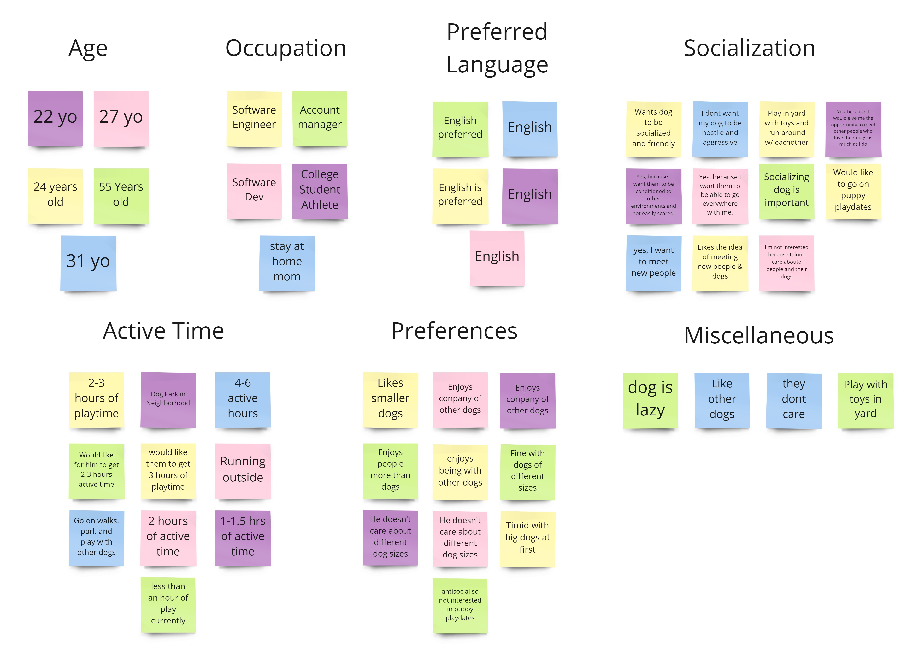
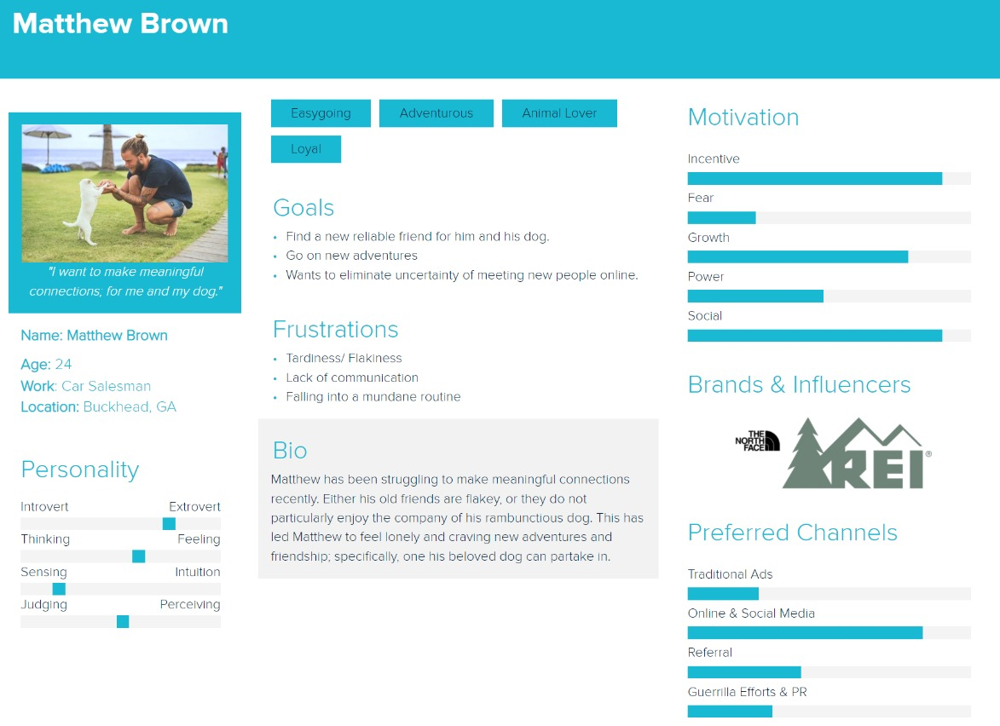

- Team
- Bao Tran, Joelle Gregory, Kristen Talbot, Jeffrey, and I
- My Role
- User Research, Competitor Analysis, Interviews, Usability Testing, Wireframing
- Goal
- Create a user-friendly network for dog owners who want to meet new friends for themselves and their dogs
- Tools Used
- Figma, Adobe XD, Miro, Trello, GitHub, VS Code, Hotjar, Whimsical & Google Analytics.
The Challenge
Researching the User
- Competitor Analysis
- Survey & One-on-One Interviews
Click here to download my Competitor Analysis
- Affinity Diagram
We also all contributed to a user interview research plan where we formulated 20 or so open-ended questions surrounding their opinions on pets, the idea of Pawpup, and any relevant, potentially helpful information. Below are the notes taken from the user interviews and grouped up under similar categories:
Defining the User
- User Persona
Click here to see the full user persona

- User Journey
Click here to see Matthew's full user journey map

Ideating
- User Flow
Click here to see the full user flow
- Pawpup Sitemap
Click here to see the full user persona
Prototyping
- Sketching
- Low-Fidelity Prototype
- After coming up with a rough idea with what we all wanted we began working on a low-fidelity prototype we can then conduct usability tests on to guide us on what is best for the user. SOme initial thing we all agreed on was having a lower-navigation bar, a swiping mechanic similar to Bumble and Tinder, and questionnaire or survey of some sort to set users’ preferences.
- High-Fidelity Prototype
- After conducting a total of 7 usability interviews who were a mix of friends, family and other UI/UX design students we were able to iterate on it in order for PawPup to be the best it could. We went with a vibrant orange and blue color combination because we wanted to keep a friendly and welcoming themes to our users. I also found that colors like blue and yellow are the colors which dogs are most responsive since they are blind to colors like red and green.
- Iteration 1
- After practicing our daily group stand ups revolving any newfound information, we noted a similar issue users were having when met with the create profile screen. They were confused on what that the 6 circles were for and thought they could not proceed to the next page until they finished. We instead let that be the screen where they chose what image would be their main profile picture image so it would only ask for one photo which they had the ability to skip. We ended up moving the option of uploading up to 6 pictures of the user and their dog to a later screen with more details surrounding editing the user’s profile.
- Iterations 2 & 3
- Along with a welcoming and friendly theme we also wanted to have a sleek design that was visually appealing
for the users if we wanted them to be frequent users. We first decided that the top header of the screen could
be changed to the one below with the pawprint shaped as a location icon so it could look like the phone screen
had more open space and was less confined especially considering that our user is one who wants to go out and
explore more.
The 3rd iteration was also part of trying to make the app look more appealing, therefore we went with making the icons more subtle and less visually loud. We also decided to take off the title of each icon for a minimalist approach which could have been better executed by maybe implementing the words that way the user does bot have to constantly guess through which icon may lead to which screen. (Criticisms of that in the conclusions)
Conclusions
Our group worked relatively well together, and we were able to compromise on design decisions if we did ever have
differing ideas for the interface. In the end we always made sure we were advocating for our user when concluding
design decisions. What I wish we could have done differently is test a bit more on our Hi-Fidelity prototype so that
we could have prevented the biggest critique we got which taking off the titles of each button on our lower-nav bar after
the user was done with the coaching screen.
For future iterations and ideas, I would like to be able to add a map feature of the user’s area where there are hotspot
near them of user out on puppy playdates. That way more of a group-based community can flourish and dogs can be excited to
go out and socialize like their owners. I also think working on how the algorithm would work would be extremely interesting
to work on as we can ask more questions on the survey given and be able to encourage the matching of people with similar
preferences.
The biggest challenges we faced was the 3-hour time difference since I was the only one from California
while my partners were out in Georgia. I saw this as an opportunity to get used to the idea of working remote if I ever needed to
and just managed/scheduled my whole week surrounding this project. We were all able to consistently meet when needed to and would say we
functioned pretty well as a team.